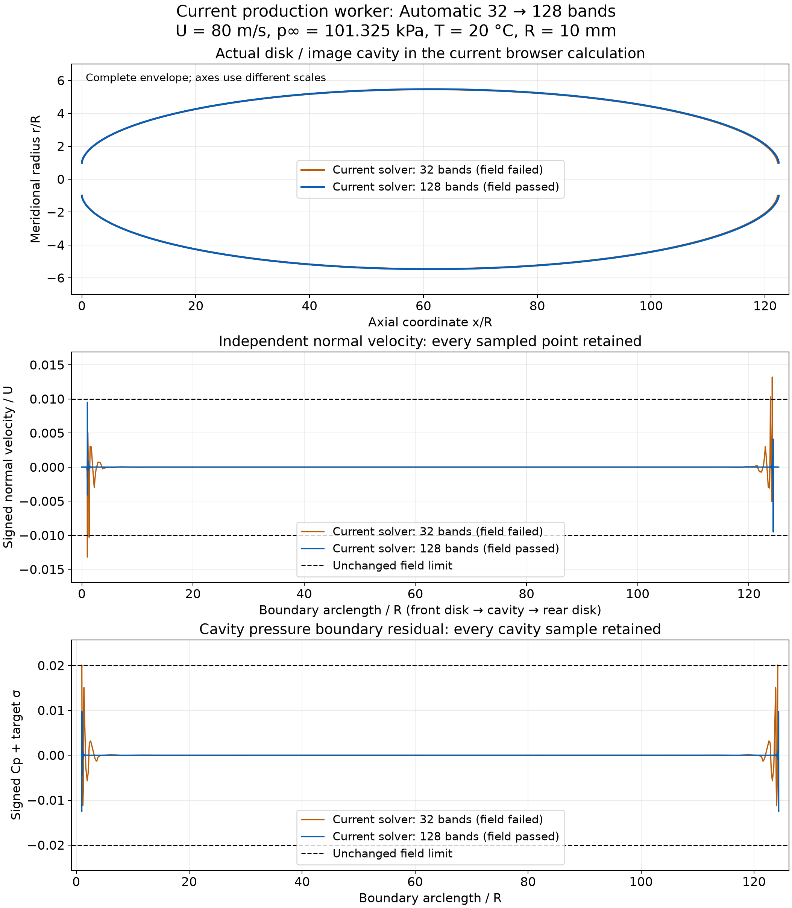

Disk BEM: automatic range and mesh
Current forward driver 0.1.2-bidirectional-bracket; core 0.3.1-c1-forward-domain. Pressure, speed and temperature stay fixed while the numerical length search expands. A converged shape that fails its field audit may receive one finer-mesh calculation.
These tested cases pass their stated numerical field screens; every positive sigma is not yet supported. The fine 80 m/s margin is narrow. Mesh convergence and experimental accuracy remain unqualified. The downstream image disk is an artificial closure.
Actual current browser execution
At 80 m/s, 101.325 kPa absolute, 20 °C and a 10 mm disk radius, Automatic mesh first solved 32 cavity bands. That shape failed its independent field checks. A fresh 128-band calculation then passed within the original shared 300 s budget. The interface reported 162.8 s; worker stages totalled 161.441 s. All physical inputs remained unchanged.
| Calculation | Target σ | Image L/R | Max |un|/U | Max |Cp+σ| | Decision |
|---|---|---|---|---|---|
| Current browser: 32 bands | 0.03099014669 | 122.2469 | 0.01320 | 0.02009 | Rejected field audit |
| Current browser: fresh 128 bands | 0.03099014669 | 122.41333043 | 0.00952225 | 0.01250498 | Passed stated field screens |
| Fresh native production: 10 m/s, 32 bands | 1.98336957 | 0.88162541 | 0.00082421 | 0.00194920 | Passed in 12.410 s |
For the actual browser fine result, achieved σ=0.03099415903; target residual=4.01235×10−6. Complete outputs retain both attempts, 3,840 independent field samples and every curved-shape sample. Execution receipt · Complete exported case · All signed field samples.

What changed
The automatic forward search begins with fresh L/R=2 and 24 endpoint calculations. Actual residual signs can extend its upper endpoint to 48, 80 and 160, or its lower endpoint to 1 and 0.5. Every probe counts toward the scalar budget. No target sigma, pressure or predicted curve is clipped or extrapolated into acceptance. Each final candidate receives a separate fresh 15-fraction direct-field audit.
Automatic mesh starts at 32 bands and retries once at 128 only when a completed pressure root has converged nodal equations and admissible geometry but fails its final field audit. Known body-containment failures, unresolved roots and exhausted length domains do not trigger that retry. All stages share one deadline; manual meshes remain fixed. The original C1 defaults remain [2,24] and its explicit research domain remains [2,80]; only forwardLengthExtension:true permits the new [0.5,160] domain.
Source equivalence and earlier measured cases
The earlier private 80 m/s candidate solved 128 bands in 110.780 s with rounded water properties. Its original version and source hashes remain recorded. A production held-state reconstruction subsequently matched all 257 nodes, 1,025 shape samples and 3,840 field samples bitwise in 8.616 s. That audit held geometry and sheet strength fixed; it was not a new root or Newton solve. The new browser execution above is a separate complete production solve using full-precision IAPWS properties. Their runtimes and inputs are not conflated.
The fresh native 10 m/s production run matches its private candidate’s physical outputs and complete field audit bitwise. Exact source comparison · Held-state evidence · 10 m/s equivalence.
Remaining scope
Finite search bounds and field accuracy still limit admission. A rejected numerical target does not establish physical absence of cavitation. As σ approaches zero, an ideal unbounded cavity needs a different infinite-domain treatment. This disk/image closure does not predict natural cavity collapse, shedding clouds or compressibility. The 80 m/s fine case passes its sampled checks but has not established mesh convergence or experimental accuracy.
Reproduction and complete records
Versioned cases and exact inputs · Summary CSV · Reproduce / verify · Instructions · SHA256 manifest.
24 wrapper controls, 6 domain/source controls and 12 worker test groups passed. These implementation checks are distinct from the actual nonlinear calculations and from experimental validation. The historical 0.1.1 page and data remain unchanged; their source-bound verifier requires Git commit c9ea0d5a.